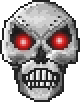
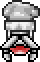
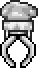
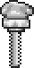
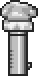

Skeletron Prime
| Drops | |
|---|---|
| Coins: | 12 |
| Item | Rate |
| Soul of Fright (20-30) | 100% |
| | 100% |
| Skeletron Prime | |
|---|---|
|  | |
| Statistics | |
| Type | Boss |
| AI Type | Skeletron Prime Head AI |
| Damage | 50 100 (while spinning) |
| Max Life | 30000 |
| Defense | 25 50 (while spinning) |
- For strategies on how to defeat Skeletron Prime, see Guide:Skeletron Prime Strategies.
Skeletron Prime is a hardmode version of the Skeletron boss. He can be summoned with the Mechanical Skull. Players have until dawn to kill him; like Skeletron, when the sun rises, he will begin to deal out instant kills and will take only 1 damage from all attacks.
Unlike Skeletron, Skeletron Prime has four hands, each of which functions differently. The Prime Cannon fires bombs and isn't always pointed at a player. The Prime Laser shoots Death Lasers similar to those of Retinazer and The Destroyer, and is always pointed at a player. The Prime Saw swipes back and forth dealing large melee damage and homes in on players (even going hundreds of feet away in some cases) during the headspin phase. The Prime Vice also swipes around but doesn't home in during headspins.
Hands
| Prime Laser | |
|---|---|
|  | |
| Statistics | |
| AI Type | Prime Laser AI |
| Damage | 25 death laser 29 melee |
| Max Life | 6000 |
| Defense | 20 |
| Prime Vice | |
|---|---|
|  | |
| Statistics | |
| AI Type | Prime Vice AI |
| Damage | 45 |
| Max Life | 10000 |
| Defense | 35 |
| Prime Saw | |
|---|---|
|  | |
| Statistics | |
| AI Type | Prime Saw AI |
| Damage | 52 |
| Max Life | 10000 |
| Defense | 40 |
| Prime Cannon | |
|---|---|
|  | |
| Statistics | |
| AI Type | Prime Cannon AI |
| Damage | 40 bomb 30 melee |
| Max Life | 7000 |
| Defense | 25 |
Notes
- Due to the mechanical nature and name, Skeletron Prime could be a reference to Transformers; Skeletron's name already bears a resemblance to "Megatron", and the Prime suffix is a TF staple (as in Optimus Prime and Rodimus Prime).
- While it is possible to continue the fight during the day without dying, Skeletron Prime will continually headspin and barely take any damage.
- On large servers, if Skeletron Prime is still alive at the break of dawn, and is near the spawn point, he can go on a large killing spree. He will insta-kill everyone, then likely stay near spawn, catching anyone who tries to escape (In this state, he dashes forward at his victims, which make him impossible to dodge). The only way to get rid of Skeletron Prime is to use admin powers to slay all NPCs (Killing all Monsters, Town NPCs and other Bosses at the same time), or lead him far away from anyone, in such a way he can't lock on anyone (If you can hear the boss music, he can likely lock on you, even if he is offscreen).
- Even in this state, he often tends to lock on to someone who is far from the spawn (underground, or simply stranded in nature), kill the victim, then fly away due to the lack of targets.
History
- 1.1: Introduced.
| Bosses |
|---|
| King Slime Eye of Cthulhu Eater of Worlds Skeletron Wall of Flesh The Twins The Destroyer Skeletron Prime |